행사의 얼굴,
화면에서 결정됩니다
축제·공연·기업행사에 맞는 크기의 LED 스크린을 자사 공장에서 직접 만들어 빌려드립니다. 장비만 두고 가지 않습니다. 설치부터 운영·철수까지 전담팀이 함께합니다.
이런 행사에 설치합니다
뒤쪽 관람객도 무대와 영상을 선명하게 볼 수 있어야 합니다. 조명이나 배너로는 낼 수 없는 몰입감을 만듭니다.
지역 축제 · 공연
야외 무대 메인 스크린, 공연 실시간 중계
기업행사 · 컨퍼런스
사업설명회, 세미나, 기념식, 연회장
팝업스토어 · 박람회
방문객 발걸음을 멈추게 하는 대형 화면
체육대회 · 운동회
야외 행사장 안내와 경기 화면 송출
모델하우스 · 분양
단지 영상과 홍보 콘텐츠 상영
학교 · 대학 축제
캠퍼스 축제 무대와 대형 관람석
몇 인치가 필요할까요?
무조건 크게가 아니라, 행사장 규모와 관람 거리, 무대와 화면 사이 거리를 보고 정합니다. 장소와 예상 인원을 알려주시면 맞춰 드립니다.
연회장·세미나실·전시 부스처럼 관람 거리가 가까운 실내 행사
거리 축제·광장 행사의 메인 무대. 예: MAP-O 마포 청년축제 300인치
대형 야외무대와 넓은 객석. 맨 뒤 관람객까지 선명하게
※ 화면 크기와 비율은 현장 여건에 맞춰 구성합니다. 정확한 구성은 상담 시 안내합니다.
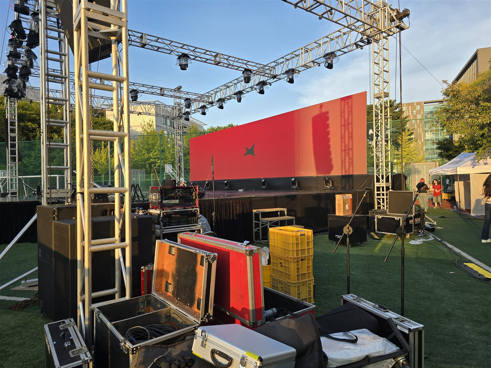
장비만 빌려주는
업체가 아닙니다
- 자사 공장에서 직접 제작한 LED 전광판
- 상담 · 견적 · 설치 일정 조율까지 전화로 빠르게
- 설치부터 운영 · 철수까지 전담팀이 책임 진행
- 행사 영상 · PPT · 이미지 · 공연 화면 모두 송출
- 노트북·영상 장비 연결, 현장 실시간 중계 가능
- 무대 트러스 · 대형 LED 월 등 대규모 설치 경험
LED 스크린 설치 사례
사진을 누르면 크게 볼 수 있습니다.


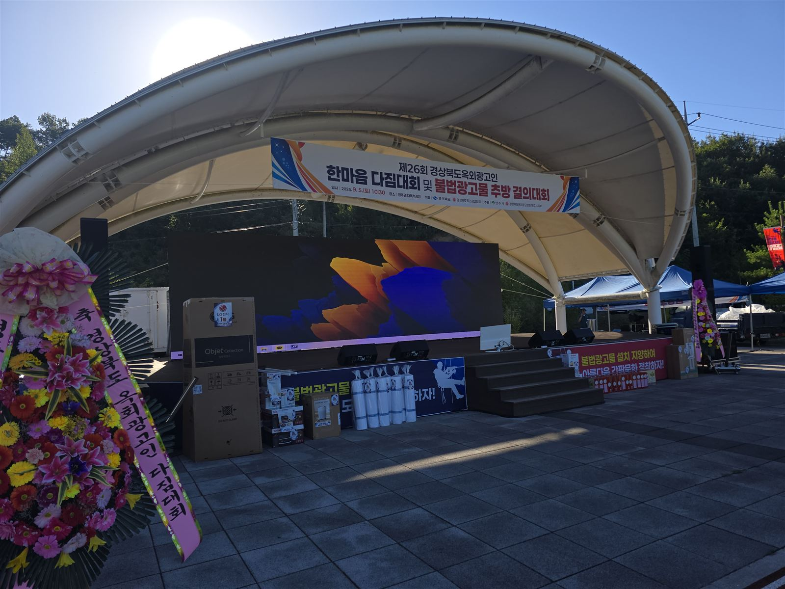
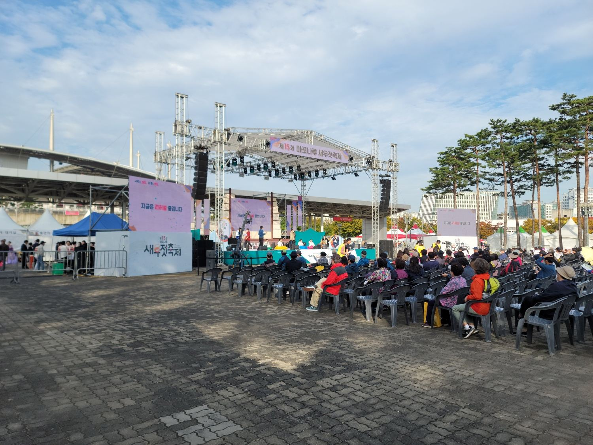
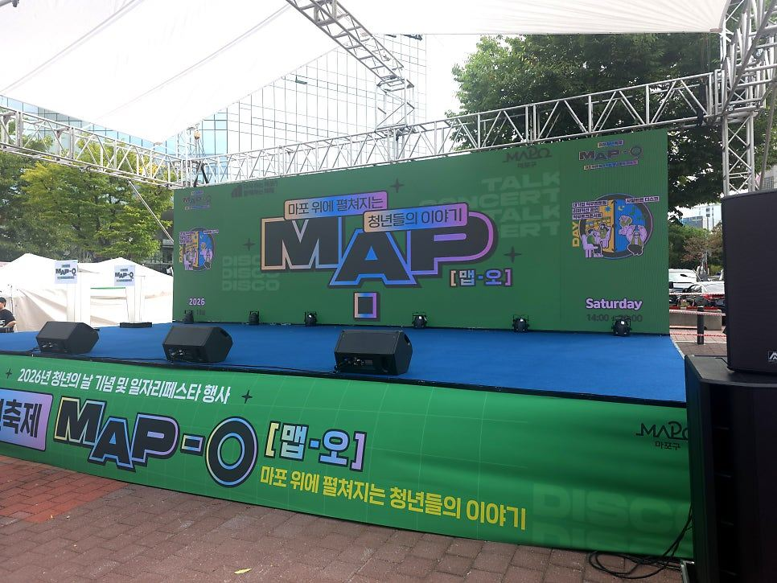

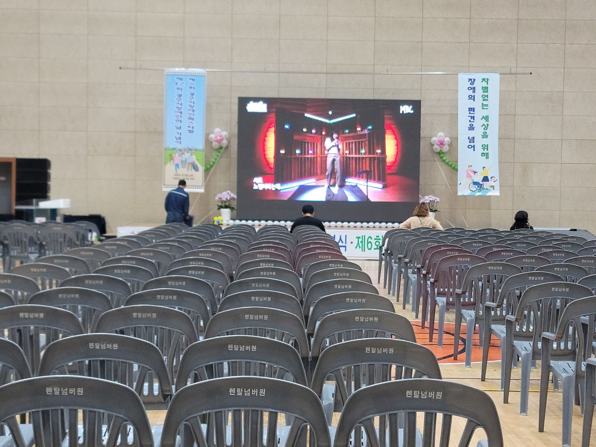
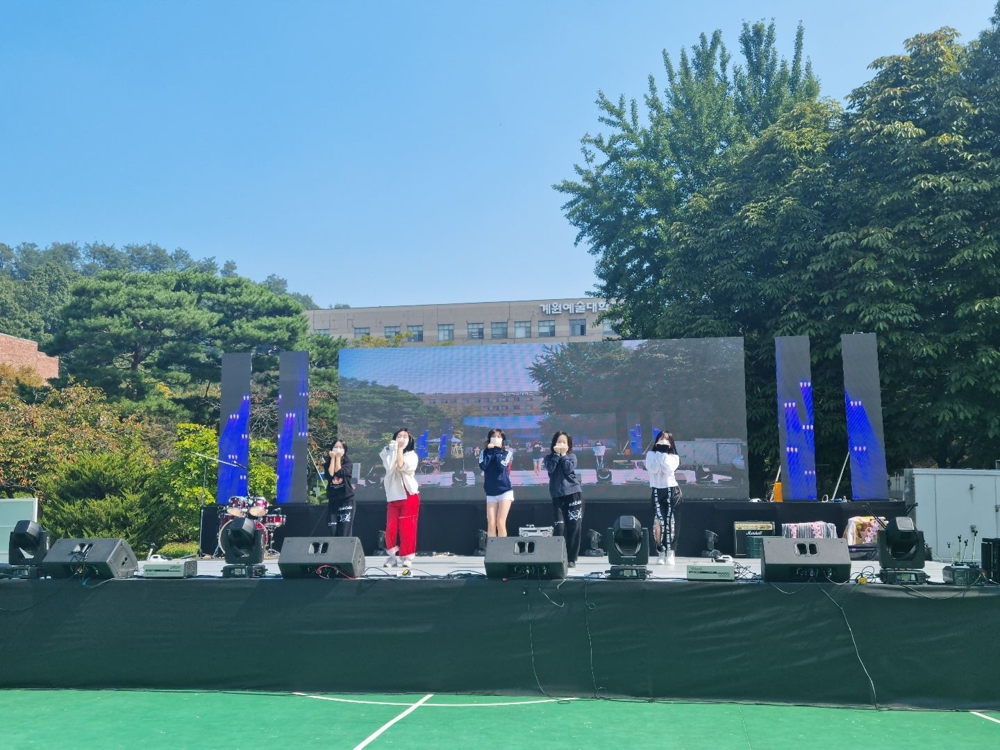
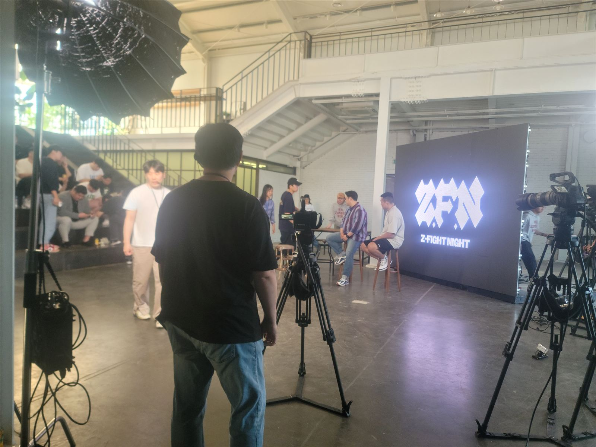
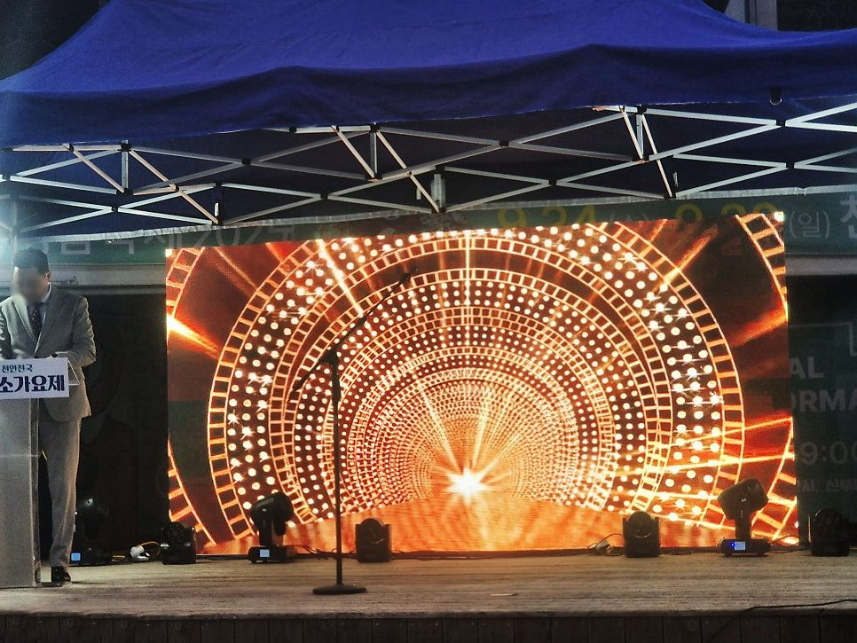
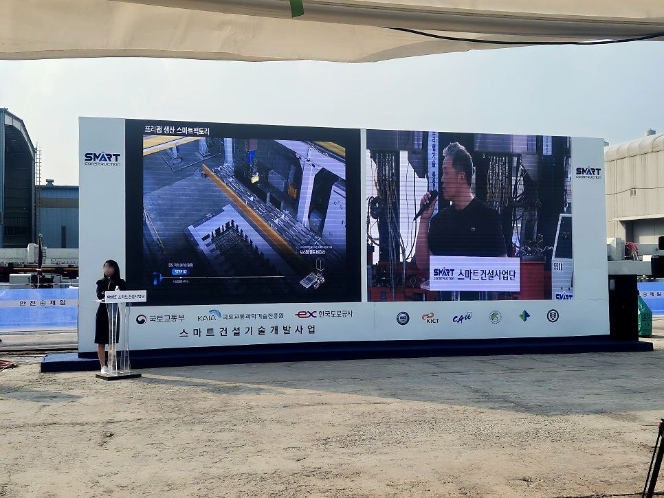
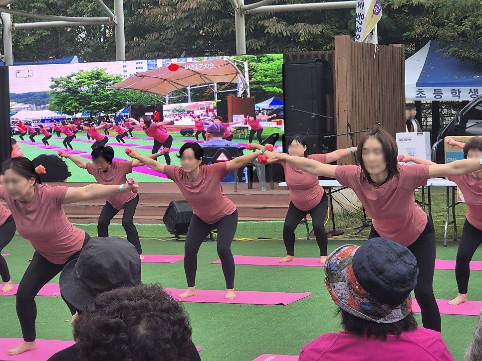
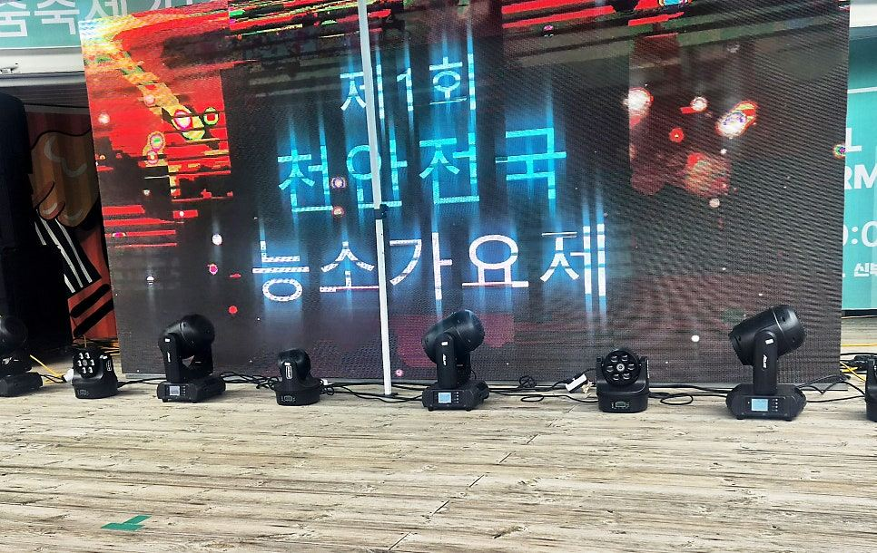
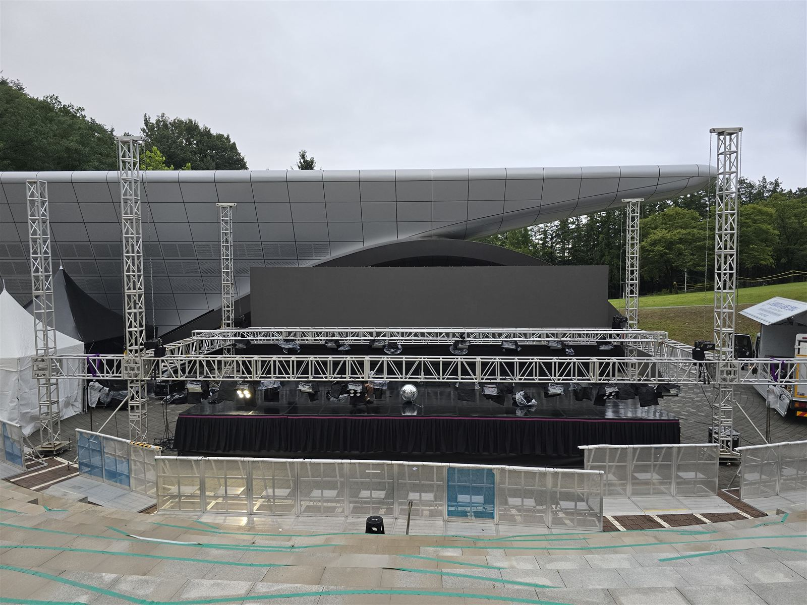
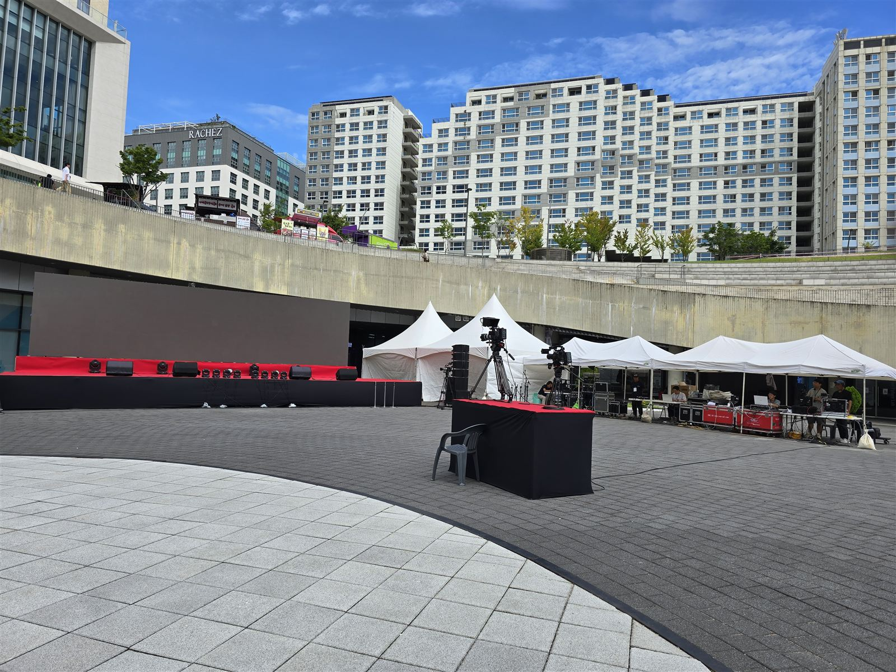
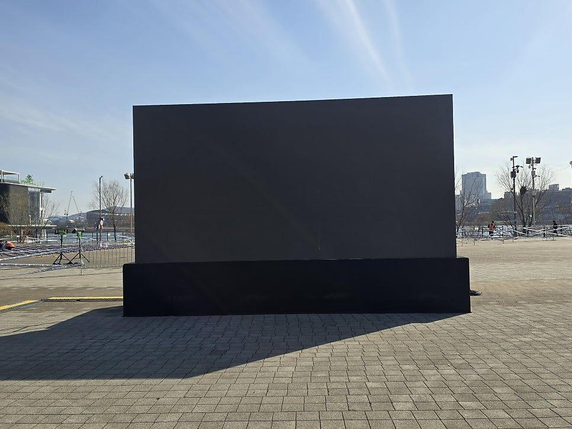
※ LED 화면을 카메라로 찍으면 줄무늬나 색 번짐이 보일 수 있습니다. 디스플레이와 카메라 촬영 방식의 차이로 생기는 현상이며, 실제 화면에는 문제가 없습니다.
LED 스크린 자주 묻는 질문
실내에서도 쓸 수 있나요?
네. 실내·실외 모두 설치합니다. 연회장, 세미나실, 전시장 같은 실내 행사도 가능합니다.
어떤 콘텐츠를 띄울 수 있나요?
행사 영상, PPT, 이미지, 홍보 영상, 공연 화면 등 대부분 송출됩니다. 노트북·영상 장비를 연결하거나 현장 화면을 실시간으로 중계할 수도 있습니다.
설치와 철수도 해 주나요?
네. 전담팀이 설치부터 행사 중 운영, 철수까지 책임지고 진행합니다.
견적을 받으려면 무엇이 필요한가요?
행사 장소, 일정, 예상 관람객 규모를 알려주세요. 현장에 맞는 스크린 구성과 설치 방법을 함께 상담해 드립니다.
처음 빌려 보는데 어렵지 않나요?
처음 이용하시는 분도 쉽게 진행하실 수 있도록 절차를 간단하게 만들었습니다. 견적부터 설치 일정까지 전화 한 통으로 조율합니다.